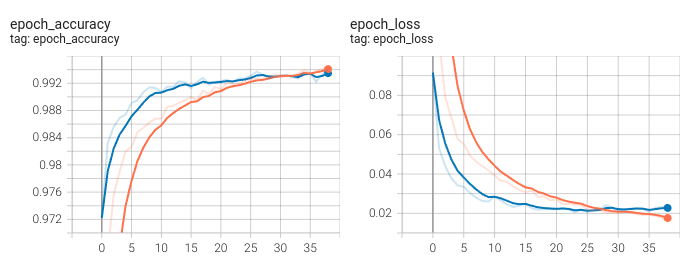

Typical training
Let's see how a typical training looks like. I will be using Keras for this example. I have prepared a Collab notebook with all the code. The whole notebook runs in a few minutes.
We just need numpy and keras for this experiment.
import numpy as np
from tensorflow import keras
from tensorflow.keras import layers
The MNIST dataset is loaded and preprocessed.
def load_data():
# Model / data parameters
num_classes = 10
input_shape = (28, 28, 1)
# the data, split between train and test sets
(x_train, y_train), (x_test, y_test) = keras.datasets.mnist.load_data()
# Scale images to the [0, 1] range
x_train = x_train.astype("float32") / 255
x_test = x_test.astype("float32") / 255
# Make sure images have shape (28, 28, 1)
x_train = np.expand_dims(x_train, -1)
x_test = np.expand_dims(x_test, -1)
print("x_train shape:", x_train.shape)
print(x_train.shape[0], "train samples")
print(x_test.shape[0], "test samples")
# convert class vectors to binary class matrices
y_train = keras.utils.to_categorical(y_train, num_classes)
y_test = keras.utils.to_categorical(y_test, num_classes)
return x_train, y_train, (x_test, y_test)
We define a very simple convolutional neural network architecture.
def get_sample_model(input_shape=(28, 28, 1), num_classes=10):
model = keras.Sequential(
[
keras.Input(shape=input_shape),
layers.Conv2D(32, kernel_size=(3, 3), activation="relu"),
layers.MaxPooling2D(pool_size=(2, 2)),
layers.Conv2D(64, kernel_size=(3, 3), activation="relu"),
layers.MaxPooling2D(pool_size=(2, 2)),
layers.Flatten(),
layers.Dropout(0.5),
layers.Dense(num_classes, activation="softmax"),
]
)
return model
Finally we have the train function.
def train_model_on_mnist(model, fit_kwargs=None, callbacks=None, compile_kwargs=None):
default_compile_kwargs = dict(loss="categorical_crossentropy", optimizer="adam", metrics=["accuracy"])
if compile_kwargs is not None:
default_compile_kwargs.update(compile_kwargs)
model.compile(**default_compile_kwargs)
default_callbacks = [
keras.callbacks.ReduceLROnPlateau(monitor='loss', patience=10000),
]
if callbacks is not None:
default_callbacks += callbacks
default_fit_kwargs = dict(verbose=0, epochs=1000, validation_data=test_data)
if fit_kwargs is not None:
default_fit_kwargs.update(fit_kwargs)
ret = model.fit(x_train, y_train,
callbacks=default_callbacks, **default_fit_kwargs)
return ret.history
And we call the train function to fit the model.
x_train, y_train, test_data = load_data()
train_model_on_mnist(
get_sample_model(),
fit_kwargs=dict(batch_size=128, verbose=1, epochs=100),
compile_kwargs=dict(optimizer=keras.optimizers.Adam(1e-3)),
callbacks=[
keras.callbacks.TensorBoard(log_dir='logs'),
keras.callbacks.EarlyStopping(patience=15),]
);
We can use Tensorboard to visualize the train (orange) and validation (blue) metrics during the training.

Validation accuracy reaches 99.4% accuracy which is consistent with the state of the art.
We have trained a neural network on the MNIST dataset, now let's think deeply about all the steps and its implications.